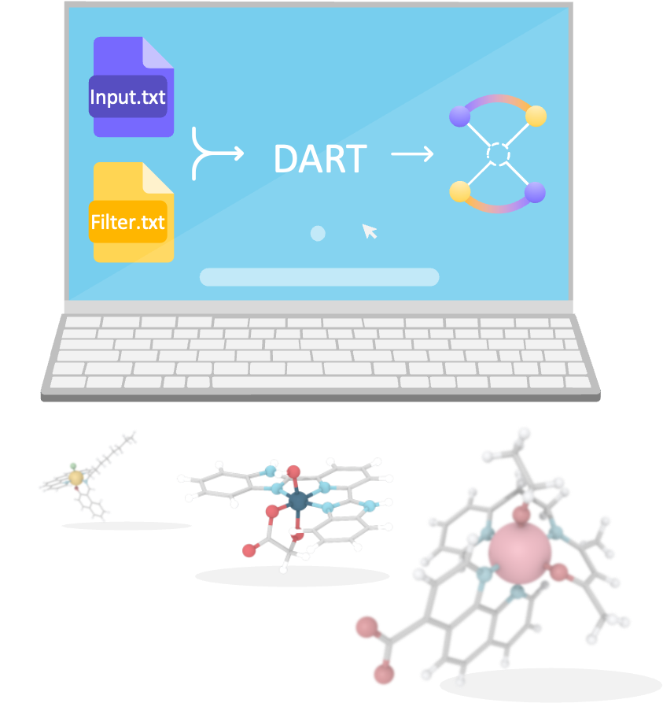

DARTassembler

dev
How to Use DART
Installation
Quickstart Guide
Advanced Example
Understanding DART
DART Modules
Module Overview
MetaLig Ligand Database
Ligand Filters Module
Assembler Module
Additional Resources
Troubleshooting and FAQs
DART Tips and Tricks
Limitations and Recommendations
How to cite DART
Version History
DARTassembler
Index
Index
A
|
B
|
C
|
D
|
F
|
G
|
I
|
L
|
M
|
N
|
O
|
P
|
R
|
S
|
T
|
V
A
atomic_neighbors (configuration value)
B
bidentate_rotator (configuration value)
C
command line option
DARTassembler
,
[1]
,
[2]
,
[3]
,
[4]
,
[5]
,
[6]
complex_name_appendix (configuration value)
complex_name_length (configuration value)
concatenate_xyz (configuration value)
coordinating_atoms_composition (configuration value)
D
DARTassembler
command line option
,
[1]
,
[2]
,
[3]
,
[4]
,
[5]
,
[6]
denticities (configuration value)
F
ffmovie (configuration value)
forcefield (configuration value)
G
geometry (configuration value)
geometry_modifier_filepath (configuration value)
graph_IDs (configuration value)
I
input_db_file (configuration value)
interatomic_distances (configuration value)
isomers (configuration value)
L
ligand_charges (configuration value)
ligand_composition (configuration value)
ligand_db_file (configuration value)
M
max_num_complexes (configuration value)
metal_center (configuration value)
metal_ligand_binding_history (configuration value)
metal_oxidation_state (configuration value)
molecular_weight (configuration value)
N
name (configuration value)
number_of_atoms (configuration value)
O
occurrences (configuration value)
output_db_file (configuration value)
output_directory (configuration value)
output_ligands_info (configuration value)
P
planarity (configuration value)
R
random_seed (configuration value)
remove_ligands_with_adjacent_coordinating_atoms (configuration value)
remove_ligands_with_beta_hydrogens (configuration value)
remove_ligands_with_missing_bond_orders (configuration value)
S
same_isomer_names (configuration value)
smarts (configuration value)
T
total_charge (configuration value)
V
verbosity (configuration value)